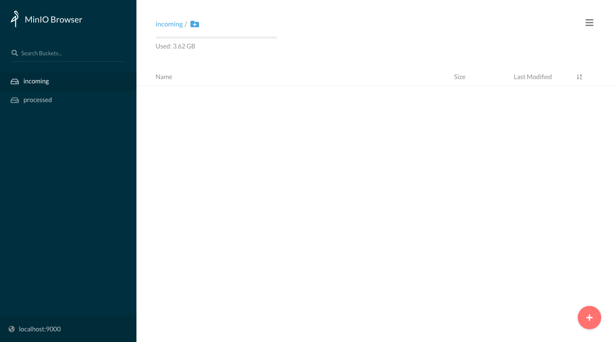
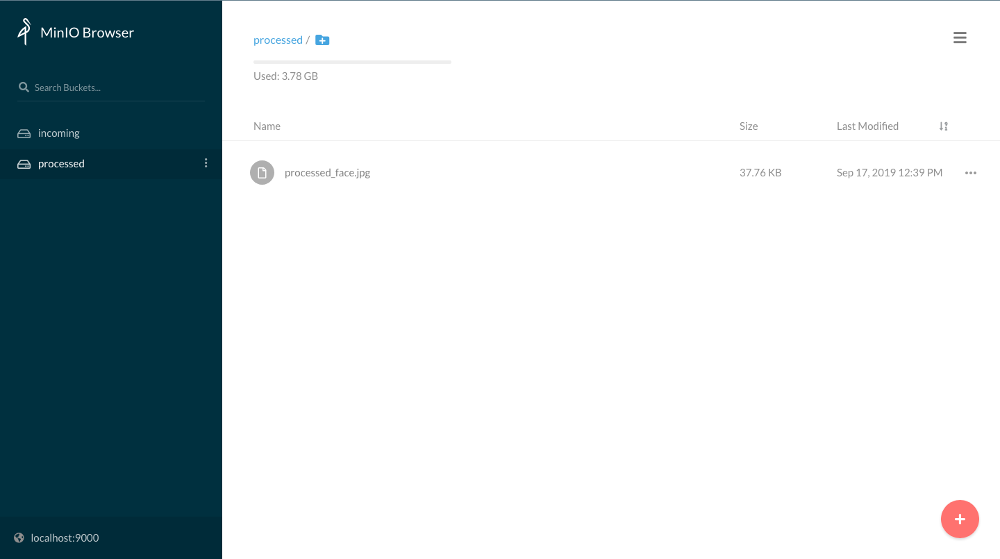

Workflows - a.k.a. functions calling functions
Building your first workflow - from OpenFaaS workshop
Using the CLI to deploy SentimentAnalysis function from the store:
mkdir $HOME/workflows cd $HOME/workflows export OPENFAAS_URL=http://127.0.0.1:31112 faas-cli store deploy SentimentAnalysis
The Sentiment Analysis function will tell you the subjectivity and polarity (positivity rating) of any sentence. The result of the function is formatted in JSON as you can see with the example below:
echo -n "California is great, it's always sunny there." | faas-cli invoke sentimentanalysis
# Formatted result { "polarity": 0.8, "sentence_count": 1, "subjectivity": 0.75 }
Now let's create a new simple function (like in the previous exercise) that will call sentimentanalysis just forwarding the request text.
faas-cli new --lang python3 invoker --prefix="<your-docker-username-here>"
The handler.py code should look like this:
import os import requests import sys def handle(req): """handle a request to the function Args: req (str): request body """ gateway_hostname = os.getenv("gateway_hostname", "gateway") test_sentence = req r = requests.get("http://" + gateway_hostname + ":8080/function/sentimentanalysis", data=test_sentence) if r.status_code != 200: sys.exit("Error with sentimentanalysis, expected: %d, got: %d\n" % (200, r.status_code)) result = r.json() if result["polarity"] > 0.45: return "That was probably positive" else: return "That was neutral or negative"
Put requests in requirements.txt file:
echo "requests" >> invoker/requirements.txt
Remember to set the environment variable gateway_hostname in invoker.yml:
version: 1.0 provider: name: openfaas gateway: http://127.0.0.1:31112 functions: invoker: lang: python3 handler: ./invoker image: mircot/invoker:latest environment: gateway_hostname: "gateway.openfaas"
Then, just deploy our function:
faas-cli up -f invoker.yml
You can now try to invoke the new function.
You can verify that the request has been forwarded to sentimentanalysis by your custom function.
We have just created a basic workflow.
$ echo -n "California is bad, it's always rainy there." | faas-cli invoke invoker That was neutral or negative
$ echo -n "California is great, it's always sunny there." | faas-cli invoke invoker That was probably positive
Triggers
Example: using storage events webhook
If you are using Vagrant image you can start from here, otherwise at the end you'll find how to setup a S3 object storage on your own.
Let's configure it properly for using a webhook that points to our openfaas instance (we will use it later to trigger a function as soon as a new file appears).
mc admin config set local < /home/vagrant/config_minio.json mc admin service restart local
The request sent to the function by Minio in case of a file upload will have a body in this form:
{ "EventName": "s3:ObjectCreated:Put", "Key": "images/test7.jpg", "Records": [ { "eventVersion": "2.0", "eventSource": "minio:s3", "awsRegion": "", "eventTime": "2019-09-10T14:27:46Z", "eventName": "s3:ObjectCreated:Put", "userIdentity": { "principalId": "usernameID" }, "requestParameters": { "accessKey": "myaccesskey", "region": "", "sourceIPAddress": "192.168.0.213" }, "responseElements": { "content-length": "0", "x-amz-request-id": "15C319FC231726B5", "x-minio-deployment-id": "f6a78fdc-8d8e-4d2c-8aca-4b0bd4082129", "x-minio-origin-endpoint": "http://192.168.0.213:9000" }, "s3": { "s3SchemaVersion": "1.0", "configurationId": "Config", "bucket": { "name": "images", "ownerIdentity": { "principalId": "usernameID" }, "arn": "arn:aws:s3:::images" }, "object": { "key": "test7.jpg", "size": 1767621, "eTag": "1f9ae70259a36b5c1b5692f91386bb75-1", "contentType": "image/jpeg", "userMetadata": { "content-type": "image/jpeg" }, "versionId": "1", "sequencer": "15C319FC2679B7CB" } }, "source": { "host": "192.168.0.213", "port": "", "userAgent": "MinIO (linux; amd64) minio-go/v6.0.32 mc/2019-09-05T23:43:50Z" } } ] }
Now create two buckets called incoming and processed:
mc mb local/incoming mc mb local/processed
Set the trigger for any new jpg file appearing in local/incoming:
mc event add local/incoming arn:minio:sqs::1:webhook --event put --suffix .jpg
You can log into the WebUI at http://localhost:9000/ui/ with username admin and password adminminio.

From there you can upload files and check the contents of the buckets.

Trigger a facedetect function on loaded images
First of all create a new function:
mkdir $HOME/triggers cd $HOME/triggers faas-cli new --lang python3 processimage --prefix="<your-docker-username-here>"
Then we need to modify the handler to:
- get the file name from the storage event
- get the file from the storage
- encode it in base64 (required as input by the face detection function)
- call the face detection function
- get the output and save it back to the storage in a separate bucket
A possible result could be:
import json from minio import Minio import requests import os import base64 def handle(st): """handle a request to the function Args: st (str): request body """ # Decode the json from the Minio event req = json.loads(st) # Get configuration parameters from the docker environment (set in the processimage.yml) gateway = os.getenv("openfaas_gw", "gateway.openfaas") # Configure the storage client mc = Minio(os.environ['minio_hostname'], access_key=os.environ['minio_access_key'], secret_key=os.environ['minio_secret_key'], secure=False) # Set the name for the source and destination buckets source_bucket = "incoming" dest_bucket = "processed" # Get the name of the file from the 'Key' field in the event message file_name = req['Key'].split('/')[-1] # Get the file from the storage mc.fget_object(source_bucket, file_name, "/tmp/" + file_name) # Encode the image into base64 f = open("/tmp/" + file_name, "rb") input_image = base64.b64encode(f.read()) # Pass it to the facedetect function r = requests.post(gateway + "/function/facedetect", input_image) if r.status_code != 200: return "Error during call to facedetect, expected: %d, got: %d\n" % (200, r.status_code) # Finally get the output and save it locally dest_file_name = f"processed_{file_name}" f = open("/tmp/" + dest_file_name, "wb") f.write(r.content) f.close() f = open("/tmp/input_" + file_name, "wb") f.write(input_image) f.close() # sync to Minio mc.fput_object(dest_bucket, dest_file_name, "/tmp/"+dest_file_name) return f"Image {file_name} processed. Result is in {dest_bucket}"
Now you need to configure the deployment of the functions:
version: 1.0 provider: name: openfaas gateway: http://127.0.0.1:31112 functions: # function for loading the image from storage - the code just edited processimage: lang: python3 handler: ./processimage image: <your-docker-username-here>/processimage:latest environment: write_debug: true # environment variables used inside the funcion code minio_hostname: "10.42.0.1:9000" minio_access_key: "admin" minio_secret_key: "adminminio" openfaas_gw: "http://gateway.openfaas:8080" # face detection function, pre-built. You can find the source here: # https://github.com/alexellis/facedetect-openfaas facedetect: skip_build: true image: alexellis2/facedetect:0.1 environment: output_mode: "image" write_debug: true
Before pushing the function in, don't forget to set the requirements.txt:
minio requests
Then just build and deploy our two functions with:
faas-cli build -f processimage.yml faas-cli push -f processimage.yml faas-cli deploy -f processimage.yml
Now, once the functions will be ready you should try to upload a .jpg image to the incoming bucket using the WebUI ( login at <your host>:9000 with user admin and password adminminio ) and soon you should be able to find a processed file in the processed bucket that you can download from the webUI and visualize.
In the following image you can see an example of the hook result:


Homework
- Create a workflow with 2 functions in different languages
- Try to create a workflow triggered by a storage event that use the Tensorflow serving function created on the previous set of homeworks
EXTRA: Setting up an S3-compatible storage
mkdir $HOME/minio_data docker run -d -v $HOME/minio_data:/data --net host -e "MINIO_ACCESS_KEY=admin" -e "MINIO_SECRET_KEY=admindciangot" minio/minio server /data
and the client
wget https://dl.min.io/client/mc/release/linux-amd64/mc mv mc /usr/bin/mc sudo chmod +x /usr/bin/mc